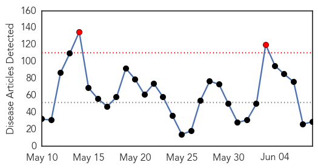
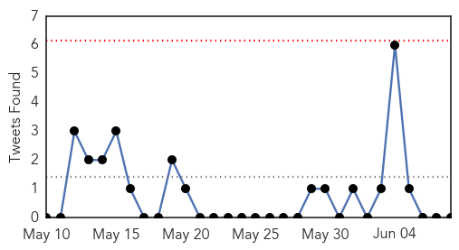

Toggle navigation
Early Warning
Daily Alerts
Unknown
Jun 08, 2014
30 Day Trends
Web: 2
alerts
, 0
warnings
Twitter: 0
alerts
, 0
warnings
Top Articles:
0.989
Highly contagious virus hits Mater Dei; patients being kept in isolation
0.975
In neighbouring Bihars Muzaffarpur, toll 33 so far
0.971
KBS World Radio
0.917
Chicago Tribune
0.917
Chicago Tribune
0.917
Chicago Tribune
0.917
Chicago Tribune
0.917
Chicago Tribune
0.917
Chicago Tribune
0.910
The world windows to Thailand
0.902
11 new acute encephalitis syndrome cases, only one death
0.866
CAMBODIA PRESS-Government denies rumours of PM Hun Sen stroke
0.866
Three people dead, two wounded in ambush attack on Las Vegas police
0.866
Las Vegas police report multiple shooting, injuries
0.866
Two people dead in attack on airport in Karachi, Pakistan
0.866
Pope says Israelis, Palestinians must seek peace "undaunted in dialogue"
0.815
Acute body pain grips Kaundampatti villagers
0.812
Hospital Feed Company 'Saddened' By Baby Death
0.734
No new cases of killer tree disease in Forest of Dean
0.711
Immigrant's rabies death set off search for others
0.704
Infection in malaria-transmitting mosquito discovered
0.650
Litchi virus encephalopathy kills 8 kids in W. Bengal
0.605
Factors behind shortage of public health specialists in Pakistan discussed
0.603
Bihar CM faces people's ire over encephalitis deaths
0.603
Bihar CM faces people's ire over encephalitis deaths
0.592
Pet Talk: Protect your pet
0.566
Truthout Interviews Joshua Cutler on Lyme Disease and the IDSA
0.557
Maternal/Child Mortality: When Figures Don’t Add Up
0.511
Lack of tips in hospitals puts expectant mothers’ health at risk
Top Tweets:
0.788
Ricura la de vivir en el tropico '
0.505
En mayo, 5.851 adultos mayores se suman a la planilla de pensión alimentaria: Otros 5.851 adultos mayores en... http://t.co/yxGOSrOddA
Web/News Articles

Tweets

Article Locations
Article Confidences